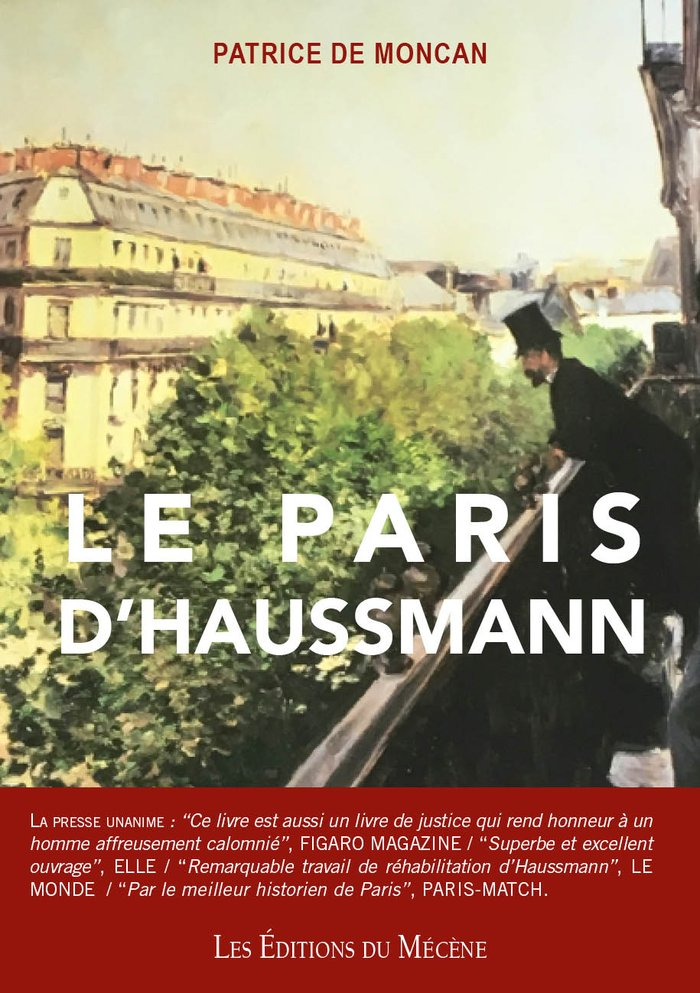
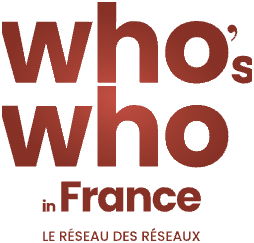

Président · fondateur
Président · fondateurPrésident des Éditions du Mécène
Patrice de Moncan
Paris comme terrain de recherche, le livre comme forme de transmission.
Doctorat d’économie, Licence d’Histoire. Fondateur de la maison en 1987, auteur de nombreux ouvrages consacrés à Paris, à la ville, au commerce et au patrimoine.
1987Création des Éditions du Mécène
Prix

Société de Géographie · FNAIMpour Le Paris d’Haussmann
Membre du Who’s Who in France